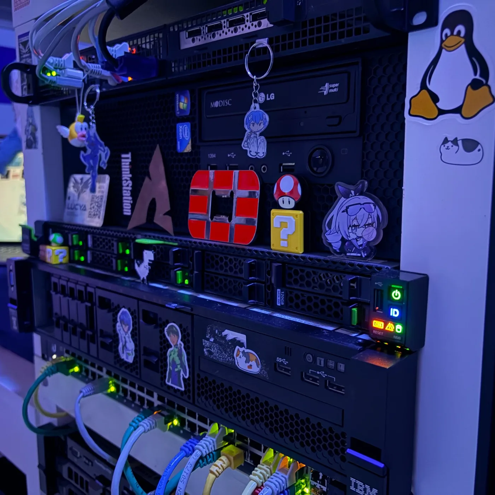
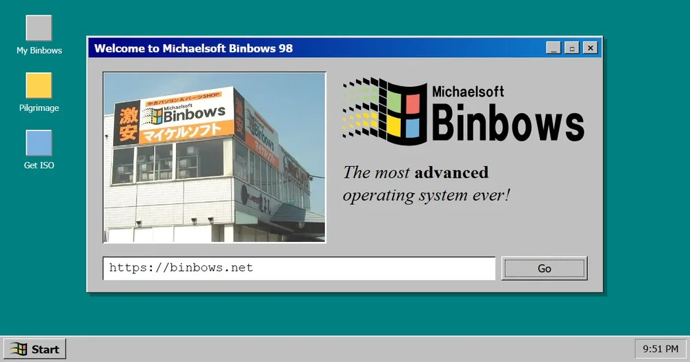

lucya
ルシア
Building homelabs, reviving retro hardware, and running more servers than one bedroom should hold.
See the rack↓Off the terminal
Things with a history.
Old computers, photographs and imaginary worlds: I like things with a history, whether I am bringing them back to life or inventing it.
The homelab is where I tinker; the camera is my excuse to go outside.
Hardware inventory
What hums in the rack.

Neofetch · system info
Behavioral index
The lid says most of it.
- Homelabs & Servers Racks, switches, servers. Everything that hums and beeps.
- Space & Astronomy Elite: Dangerous, orbital mechanics, and anything past Low Earth Orbit.
- Retro Tech CRTs, old ThinkPads, and Apple hardware older than me.
- Anime & Music City pop, vaporwave, J-rock. Mecha when it's Evangelion-shaped.
- Web Tinkering Interactive star charts, fictional government portals and small corners of the web.
Spotify · rotation · assorted
Top songs
最近のお気に入り
01 TRACKS トラック 0
02 ALBUMS アルバム 0
03 ARTISTS アーティスト 0
Elsewhere
Places to go next.
lucya.systems
An independent home for worldbuilding, and the homelab it runs on.
lucya.systems ↗
Shinsei Concordia
A science-fiction worldbuilding project: star charts, cities and institutions, from the ocean moon Orikaia Prime to the edge of the Expanse.
gov.inter-astra.net ↗
Michaelsoft Binbows
A tribute to a shop sign in Japan, with an OS that actually boots.
binbows.net ↗88 × 31
Collected on the way.
Friends
Wanna be here? Link mine & tell me.
Exhibit